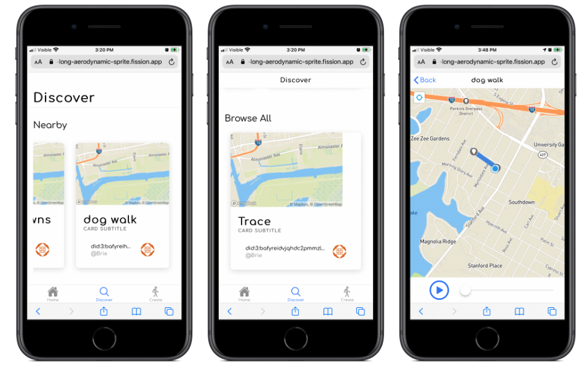
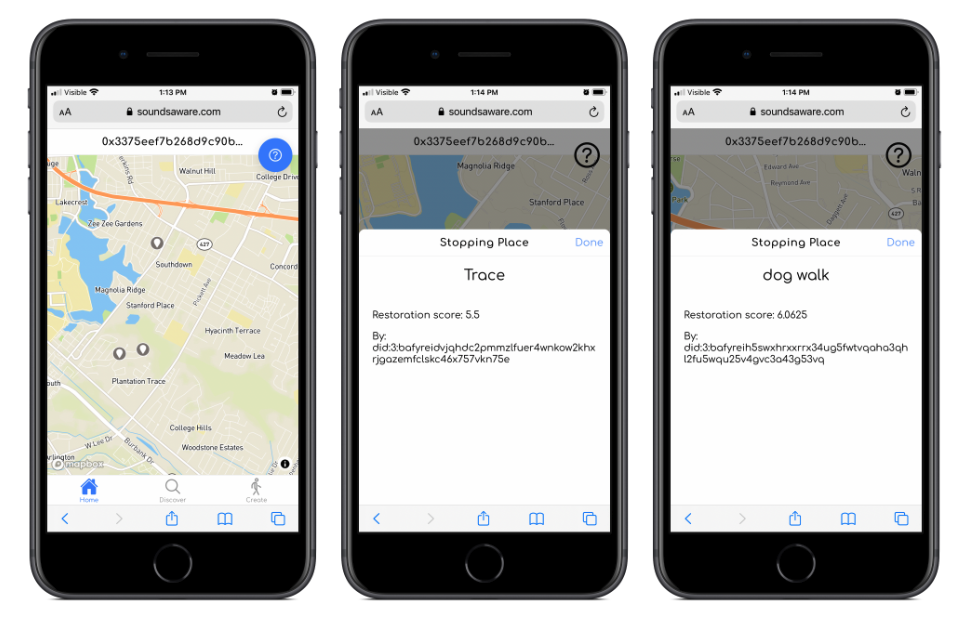

From Participatory Mobile Music to
Locative Sound Art
Tate Carson, PhD
Assistant Professor of Digital Sound Design
Introduction; mobile music and locative sound art with smartphones.
THE SMARTPHONE AS ARTISTIC PLATFORM
UBIQUITY
Open access
SENSORS
GPS, gyroscope, microphone integration
NETWORKS
Distributed and collaborative music-making
A few things that make smartphones particularly interesting for music and sound art are their ubiquity, many
people already have one in their pocket, the sensors that come with them, like GPS, gyroscope, and microphone, and
the networks that they can connect to, allowing for the creation of collaborative digital musical experiences.
These features allow for new ways of creating and experiencing music, and can transform our relationship with
sound, environment, and technology.
And the water receded
2017
A more perfect union
2017
Mesh Garden
2018
Sounds Aware
2019-2021
immaterial.cloud
2020
Resonant Landscapes
2023-Present
* I'll give an overview of the progression of my work over the past few years, starting with And the water receded
in 2017, then moving on to A more perfect union, Mesh Garden, Sounds Aware, immaterial.cloud, and finally my most
recent work Resonant
Landscapes.
* These works have explored different aspects of mobile music and locative sound art, and have built on
each other to create a body of work that explores the potential of the smartphone as an artistic platform.
And the water receded
2017
Sonification of Hurricane Katrina
Networked Animated Notation
Stepping Stone to Participatory Works →
*And the water receded* is a musical piece that sonifies Hurricane Katrina data for three performers and
electronics, condensing the storm's timeline from formation to landfall. The work stems from the composer's
personal hurricane experiences and uses animated smartphone-based notation to synchronize performers with
electronics. The first movement, *And the waters returned*, transforms storm data (latitude, longitude, wind
speed, and air pressure) into musical parameters, using saw waves and noise to reflect the storm's chaotic nature.
The second movement, *What remained*, derives melodies from recovered family recipes. The piece employs
**Rhizome** for OSC message distribution, data visualization through projected maps, and ambisonics for spatial
audio representation. As a data-inspired composition, it balances artistic interpretation with scientific
sonification, using natural patterns rather than random algorithms. Initially using smartphones only for score
display, later adaptations employed them as distributed speakers when traditional multichannel systems weren't
available, establishing groundwork for future smartphone-based musical works.
A more perfect union
Direct Audience Control
2017
Smartphone Speaker Array
A More Perfect Union was conceived as a direct response to the limitations of And the Water Receded, exploring
innovative approaches to creating and experiencing music on smartphones. Utilizing a smartphone speaker array, the
work provided an immersive and interactive experience for the audience, serving as a precursor to subsequent
participatory compositions. Guided by audience evaluations, melodies evolved through a genetic algorithm,
ultimately culminating in an emergent sound that reflected collective preferences.
This is a performance version of the work that took place at LSU Museum
of Art on March 4, 2018
Breaking the Audience / Performer Divide
* The audience transitions from passive listeners to active creators in *A more perfect union*, with all
participants serving dual roles as both audience and performers, eliminating traditional performer-audience
boundaries
* Participation requires no musical expertise - audience members simply express preferences by choosing to listen
to or skip melodies, making the work accessible while allowing them to drive its evolution
* A genetic algorithm processes audience preferences in real-time, creating a feedback loop where collective
choices directly shape the musical composition's development
* The work functions as a conceptual experiment focused on collective creation rather than predetermined musical
outcomes - participants don't need technical knowledge of the underlying algorithm to meaningfully contribute
* The platform enables shared creation through audience interaction, fostering deeper connection as participants
hear the composition develop through their collective input and preferences
The League of Automatic Music Composers (Perkis, Horton, and Bischoff,
left to right) performing at Ft. Mason, San Francisco 1981.
photo: Peter AbramowitschA precursor to this concept of distributed control of a composition can
be found in the early computer networked music groups The League of
Automatic Music Composers and later The Hub. They created networks of
computers that would send messages to other computers to create a rich
texture of evolving sounds.
Karl Sims' Galapagos (1997)
photo: Ohtaka Takashi
Another important conceptual precursor to the work is Karl Sims' 1997
installation Galapagos. Sims' work consisted of several video screens,
each displaying a different virtual organism. The installation allowed
spectators to take part in evolving virtual organisms by choosing the
amount of time they spent in front of one video screen versus another.
The longer a viewer stood in front of a screen, the more he increased
the fitness of that virtual organism, and made it more likely for the
organism to pass its traits onto the next generation.
Mesh Garden
2018
Musical Game
Gyroscope
Party Music
* *Mesh Garden* is a participatory music piece using smartphones as speakers/controllers in social settings, where
players interact through orientation-based movements to create ambient music via a web interface
* The system enables creative musical interaction through phone orientation and compass heading matching - when
phones face each other, players can trade notes, fostering non-competitive creative orchestration
* Players are assigned either long bowed or short percussive sounds, with technical implementation using Web Audio
API, Tone.js, Socket.io, and Ableton Link for device synchronization
* The piece builds on previous works by moving performance to casual social spaces and increasing player agency,
while maintaining accessibility for non-musicians through game mechanics
* Player feedback indicated engagement with the musical creation process, though some developed aggressive
note-stealing strategies, suggesting potential future improvements for balancing experienced and new player
experiences
Here's a video of the piece in action. The video shows a group of people playing the game, interacting with each
other.
* *Mesh Garden* is a creative-based musical game focused on generating original music through player interaction,
contrasting with mimicry games like *Guitar Hero* which recreate existing songs
* Core gameplay involves musical decision-making through phone orientation and player interaction, with mechanics
designed for creating new music rather than reproducing predetermined scores
* Following Thomas Studley's framework, *Mesh Garden* meets creative-based game criteria: gameplay centers on
musical decisions, players directly influence music production, and actions are framed as creating new music
* The game emphasizes social meaning through collaborative creation, similar to folk music traditions, whereas
mimicry games focus on individual performance accuracy
* Key distinction lies in originality vs. reproduction - *Mesh Garden* facilitates emergent, unique compositions
through player choice and collaboration, while *Guitar Hero* values accurate reproduction of existing music
* *Instant City* is a music-building game using blocks on a light table that translates block configurations into
music, featuring ambient gameplay focused on exploration without predetermined goals
* Like *Mesh Garden*, it emphasizes exploratory musical creation through player interaction, but differs in
requiring specialized equipment (light table) versus *Mesh Garden's* accessible smartphone interface
* *Mesh Garden* drew inspiration from *Instant City's* ambient gameplay style and interactive music creation,
while improving accessibility through web-based mobile technology
* Key technological differences: *Instant City* uses physical blocks and light table detection, while *Mesh
Garden* employs Web Audio API, Tone.js, socket.io, and Ableton Link
* While both focus on exploratory music-making, *Mesh Garden* innovates through orientation-based controls and
note-trading mechanics versus *Instant City's* block arrangement system
Sounds Aware
Locative Audio Sound Art
2019 — 2021
An app for sharing sound walks
After Mesh Garden, I became interested in leveraging the mobility of smartphones to create experiences designed
for outdoor environments and walking. This led to Sounds Aware, a locative audio sound art project that fostered a
shared experience of the environment through sound. Developed as a web app, the project enabled users to share
sound walks, creating a collective soundscape that reflected the diversity of their surroundings. Running from
2019 to 2021, Sounds Aware explored the potential of locative audio as a medium for crafting shared environmental
experiences.
To what extent might the technologies of communication, art and
entertainment serve as 'prostheses' that would provide us with
experiences of wilderness that would not only enrich our human
identity but help us to preserve and expand the domain of the
non-human world?
David Dunn. Wilderness as Reentrant Form: Thoughts on the Future of
Electronic Art and Nature. Leonardo, (4):377, 1988.
- David Dunn
* Composer and artist, David Dunn proposes that communication and art technologies can serve as "prostheses" to
connect people with wilderness experiences, viewing this as essential since not everyone can access natural spaces
directly
* Sounds Aware exemplifies technology as a "prosthesis" for experiencing wilderness by using smartphones to
connect users with natural soundscapes through sound walks, active listening, and decentralized sharing. The app
focuses on restoring attention and fostering ecological awareness by helping users overcome "numbed ears" and
rediscover natural sounds in their environment. It transforms survey data about restorative experiences into
shareable sonifications, creating a collective tool for deeper engagement with nature.
* immaterial.cloud explores using peer-to-peer technology to create shared experiences and counter isolation,
showing how technology can foster meaningful interconnection
* Resonant Landscapes overlays natural soundscapes onto urban spaces using GPS, creating hybrid experiences that
encourage users to discover nature in familiar places
* Environmental artists like Truax, Westerkamp, and Barclay use sound art and interactive technology to raise
ecological awareness and encourage sustainable behavior through direct engagement
* While these technological prostheses don't replace direct nature experiences, they can enhance environmental
understanding, shift perceptions, and motivate conservation efforts

* Sounds Aware enables users to create and share sound walks by answering survey questions about the
restorativeness of specific locations
* The app converts survey responses into wind chime-like sonifications that other users hear when following the
same walk
* It uses decentralized technology (IPFS, 3Box) to manage user data, resisting the attention economy of
traditional social media

* The app focuses on restoration of attention and ecological awareness by encouraging mindful listening and
outdoor
experiences
* Users must be physically present to create or experience walks, promoting direct engagement with natural
environments
immaterial.cloud
Collaborative Sound Art
2020
peer-to-peer networking
For this project, I revisited the concept of collaborative music-making with smartphones, this time exploring the
use of the phone's camera as a trigger for changes in sound. Networked smartphones formed a temporary sound art
installation that could be set up anywhere, activating sound by flipping phones upward to allow the camera to
detect movement. immaterial.cloud was a collaborative sound art project that harnessed peer-to-peer networking to
create and share music. Designed as a collective experience, participants contributed to a shared soundscape,
leveraging smartphone networking capabilities to facilitate a dynamic, interactive musical installation that
transcended traditional boundaries of time and space.
Participants interacting with the work
* Immaterial.cloud is a web app using peer-to-peer technology (WebRTC) to create shared experiences, developed
during COVID-19 isolation
* Users interact through motion (tracked by phone cameras), which triggers shared sound changes across connected
devices
* Unlike traditional social media, it aims for deep attention and collective experience rather than profiting from
user attention
* Phones connect through a host device using broadcast methods, with each device assigned one of four presets
using granular synthesis
https://immaterial.cloud
This work needs 2-4 smartphones (iPhone or Android) connected to the
internet via WiFi or a cellular network. All sound during the
installation is played over the phones. A participant joins the network
by going to and entering the ID of a chosen
"host" phone. No extra software is required to participate.
immaterial.cloud will work with a group of participants or just one.
Resonant Landscapes
2023-Present
Locative Sound Art
Ambisonic Field Recording
GPS/Gyroscope
Resonant Landscapes is my most recent work, and it builds on the concepts explored in my previous projects. The
piece uses ambisonic field recordings to create an immersive sound environment that responds to the listener's
movement through space. By integrating GPS and gyroscope data from smartphones, the work transforms the listener's
surroundings into a dynamic, interactive soundscape, inviting them to explore the sonic possibilities of their
environment.
Resonant Landscapes creates a hybrid place, merging natural
soundscapes with urban spaces through ambisonic audio and GPS technology.
Creating a Hybrid Place:
- Locative Media: Maps state park coordinates onto DSU campus locations, creating a scaled geographical
representation.
- Ambisonic Audio: Plays immersive soundscapes when users approach designated spots.
- Hybrid Soundscapes: Combines recorded nature sounds with real-time environmental sounds.
- Body-Oriented Tracking: Uses smartphone sensors (GPS, gyroscope, accelerometer) for dynamic sound orientation.
- Non-Representational Sound: Encourages immersion through abstract, non-representational soundscapes.
Theoretical Influences:
- Draws from sound art, soundwalking, and soundscape studies.
- Resituates soundscapes in urban settings to encourage reflection on:
- Ecological significance.
- Cultural importance.
- Relationship between sound, nature, and urban life.
Experience & Impact:
- Creates a "hybrid place" blending virtual and physical realities.
- Induces a contemplative, reflective state, offering an escape from daily worries.
- Challenges traditional notions of music and art through immersive, dynamic soundscapes.
Student Research
Resonant Landscapes was developed in collaboration with a student at Dakota State University. The project provided
an opportunity to engage with cutting-edge technologies and explore the creative possibilities of locative sound
art. Through their research and experimentation, my student contributed to the development of the app and helped
shape its features.
South Dakota State Parks
You can see in this picture all of the state parks we recorded at. Carter was integral to this project, as I would
not have been able to record all of these locations without his help.
User Interactions
* Resonant Landscapes' audience webpage provides an interactive campus map with marked "listening spots" that
correspond to state park locations
* Users experience audio playback within 15-meter radius zones, with volume increasing as they approach centers
* Visual feedback includes falling leaves animation that speeds up with proximity
* The app uses smartphone sensors for body-oriented tracking, letting users change soundscape orientation by
turning physically
* The web-based interface requires no downloads, creating a hybrid space by overlaying natural soundscapes onto
the campus environment
Technical Details
Core Audio OctoMic
Web tech: React, Tailwind CSS, Resonance Audio SDK
Smartphone sensors: GPS, gyroscope, accelerometer
* The project uses a Core Audio OctoMic for 2nd-order ambisonic recording and Resonance Audio SDK for spatial
audio processing
* Built with React and Tailwind CSS, utilizing smartphone GPS for location tracking and gyroscope/accelerometer
for body-oriented listening
* Key libraries include:
- Omnitone for ambisonic audio handling
- Three.js for 3D calculations
- Turf.js for geospatial analysis
- rLayers for map functionality
* Follows frugal innovation principles by leveraging existing smartphone sensors and web technologies
* Creates hybrid spaces by combining proximal soundscapes with users' physical locations
Resonant Landscapes Concert
In addition to using the ambisonic recordings in the Resonant Landscapes app, DSU faculty and students composed
works that premiered during a public concert at the Madison Area Arts Council.
In addition to using the ambisonic recordings in the Resonant Landscapes app, DSU faculty and students composed
works that premiered during a public concert at the Madison Area Arts Council.
In addition to using the ambisonic recordings in the Resonant Landscapes app, DSU faculty and students composed
works that premiered during a public concert at the Madison Area Arts Council.
In addition to using the ambisonic recordings in the Resonant Landscapes app, DSU faculty and students composed
works
that premiered during a public concert at the Madison Area Arts Council.
In addition to using the ambisonic recordings in the Resonant Landscapes app, DSU faculty and students composed
works
that premiered during a public concert at the Madison Area Arts Council.
Veins of
the Earth
Fixed
Media
2024
The work I composed for this concert was a multi-channel fixed media piece, “Veins of the Earth,” which explores
geophonic and biophonic sounds to evoke a sense of connection between natural environments and the life they
sustain.
Resonant Landscapes @ UniMi
* As locative media art rather than site-specific art, Resonant Landscapes can be deployed anywhere by mapping
state park coordinates onto new locations
FUTURE
WORK
South Dakota Sound Archive
2025
Student Work
Community Engagement
My future research focuses on creating the DSU Digital Sound Archive, a project designed to capture the ecological
soundscapes and cultural heritage of South Dakota and nearby regions. By integrating advanced field recording
techniques and metadata, the archive will support interdisciplinary research across sound studies, ecology, and
digital arts. A key component of the project is the Resonant Landscapes app, which uses GPS technology to overlay
soundscapes onto physical locations, enhancing public engagement and ecological awareness. This initiative aligns
with DSU's mission to expand research opportunities and foster collaboration across disciplines.


 https://immaterial.cloud
https://immaterial.cloud